|
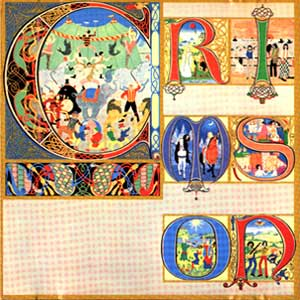
Lizard (Lagarto)
Grabado hacia fines de 1970 (editado en
diciembre)
Impresionante álbum, con increíbles arreglos musicales,
que integra géneros diferentes como jazz (en gran dosis), rock, clásico y la música experimental que ya
estaba identificando a KC. Es de esos discos que se disfrutan más con buenos
auriculares. Se destacan el extraño Cirkus y la hermosa canción Lady of the dancing water
(balada al estilo I talk to the wind y Cadence and Cascade,
del primer y segundo disco respectivamente).
El tema Lizard es lo que en aquella época se
empezó a llamar
"tema conceptual", que abarcaba todo un lado del disco de vinilo (fue uno de los
primeros de este tipo), ya que se trata de una serie de temas enganchados que
describen una historia o concepto; el primero de ellos, llamado Prince Rupert awakes,
es cantado por Jon Anderson (del grupo Yes, que aún no era lo masivo que fue un
par de años después); le sigue un instrumental llamado Bolero - The peacock's tale
(con base rítmica similar a la del Bolero de Ravel), que comienza con estilo clásico,
liderado por una hermosa
melodía en oboe; casi sin darnos cuenta el oboe retoma la melodía cantada por
Anderson minutos antes, y el tema se va transformando en una pieza de
jazz, sin perder la base de bolero, para volver a la forma clásica en el final.
En Last skirmish (La última
escaramuza) la música progresa de acuerdo al desarrollo de un combate, y
"a medida que avanza la caótica escaramuza, los instrumentos parecen
literalmente empujarse entre sí por su posición, simulando el desorden y la
huida del campo de batalla" (*). En el final, el lamento del príncipe
Ruperto: "El sombrío ostinato del bajo y la batería crea de forma
abrumadora la impresión de una fatigada procesión fúnebre que se abre paso,
solitaria, entre los restos de un ejército destrozado. Tras pasar la mayor
parte del álbum protegido por el denso arsenal de músicos invitados, Fripp
emerge de entre las filas para ofrecer una interpretación emotiva, rebosante de
intensidad y tragedia" (*).
Al igual que en
los dos primeros discos, en toda la
obra se alternan diferentes épocas, el
pasado y la actualidad. Musicalmente diferente a todo lo hecho por KC antes y
después, hay que escucharlo muchas veces para valorarlo en su real dimensión.
Fripp se concentra mucho en los teclados (incluyendo el melotrón), y hay casi
tanto de guitarra acústica como de eléctrica. Al terminar la grabación
Haskell y McCulloch dejaron la banda.
Formación de la banda |
Temas |
| Robert Fripp: guitarras, melotrón, y teclados
eléctricos |
1 - Cirkus (Circo) 6'28 - incluye
Entry of the chameleons (Entrada de los
camaleones) |
| Mel Collins: saxos y flautas |
2 - Indoor games (Juegos de salón) 5'41 |
| Gordon Haskell: bajo y voz |
3 - Happy family (Familia feliz) 4'16 |
| Andy McCulloch: batería |
4 - Lady of the dancing water (Dama del agua danzante) 2'44 (letra) |
| Peter Sinfield: letras e imágenes |
5 - Lizard 23'43 - incluye:
-
Prince Rupert awakes (El príncipe Ruperto
despierta)
-
Bolero - The peacock's tale (El cuento del pavo
real)
-
The battle of glass tears (La batalla de lágrimas
de cristal)
- Dawn song (Canción del alba)
- Last skirmish (La última escaramuza)
- Prince Rupert's lament (El lamento del
príncipe Ruperto)
|
Letras de Sinfield - Música de Fripp
Músicos invitados: Robin Miller (oboe y corno inglés), Mark
Charig (corneta), Nick Evans (trombón), Keith Tippett (piano) y Jon Anderson, del grupo
Yes (voz en Prince Rupert awakes). Charig y Evans formaban parte del
sexteto de jazz de Tippett.
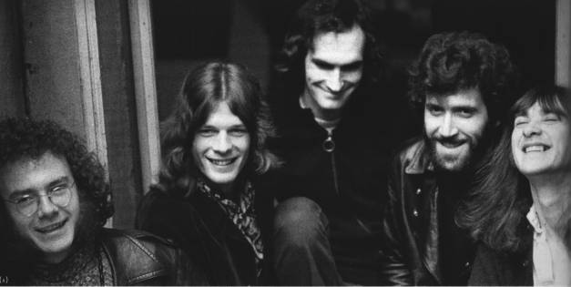
El KC de Lizard: Fripp, Collins, McCulloch, Haskell y
Sinfield.
Nota: el 1 de octubre de 1968, Fripp y Greg Lake grabaron como
invitados el tema Love, de la banda donde tocaba McCulloch,
llamada Shy Limbs. Esa pieza fue lado B de un simple lanzado en mayo del año
siguiente, cuando Fripp y Lake ya estaban conformando King Crimson.
(*): palabras de Sid Smith (de su libro In the court of
King Crimson)
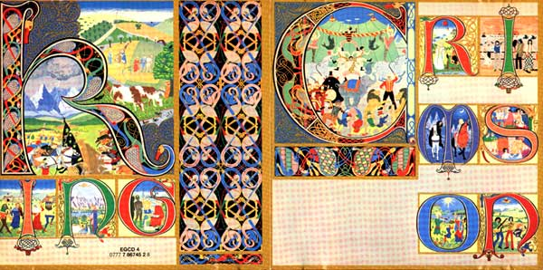
Arriba: tapa doble del disco, desplegada, muestra las
ilustraciones de la artista Gini Barris (en base a las letras de Sinfield). Cada letra del nombre de la banda está inserta en
un dibujo relacionado con un tema del album o con parte de las letras (abajo se
muestran ampliados estos dibujos). Barris, de tan solo 19 años de edad, era ama
de llaves de Julie Felix, cantante folk muy famosa en ese momento, que tenía
como gerentes discográficos a los mismos de King Crimson (David Enthoven y John
Gaydon). Sinfield le hizo llegar las letras de las canciones, y con solo ese
contexto realizó en 3 meses una de las portadas más icónicas del rock
progresivo.
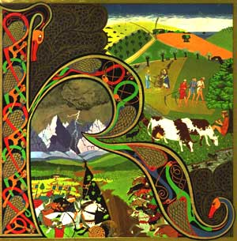 |
En
la K de KING se ven lugar y época (mediados del siglo XVII) referidos en el tema Lizard.
|
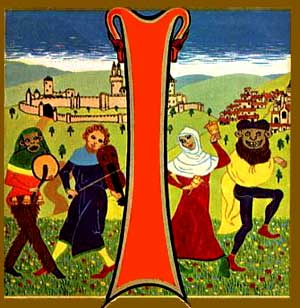 |
En la I de KING se muestra la entrada de los camaleones (Entry of
the chameleons es una parte del tema Cirkus, el primero del disco).
|
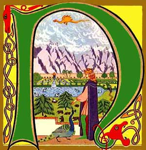
|
En la N de KING se ve al príncipe Ruperto (Prince Rupert awakes).
|
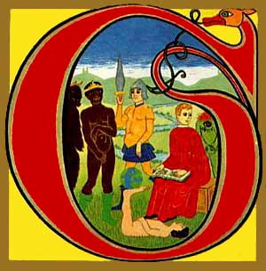
|
¿Big top?
|
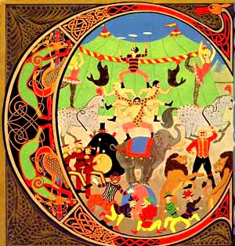 |
En la C se ilustra Cirkus
"La letra, que despotrica contra los caprichos
hedonistas del estilo de vida del rock and roll, tiene su origen en la
crianza de Sinfield. De niño, Sinfield conoció la emoción del circo
cuando la ama de llaves alemana de su madre, Maria Wallenda, lo llevó a
un espectáculo del circo Bertram Mills. La propia ama de llaves había
sido miembro de «The Famous Flying Wallendas», un espectáculo de cuerda
floja de cierta reputación. Sinfield recuerda: «Conocí a varios
entrenadores de animales, acróbatas, al severo maestro de ceremonias, con
casaca roja y sombrero de copa negro, y en particular, lo recuerdo bien, a
su amable, «solo un viejo amigo», Coco el Payaso. ¡Brillaba! Me convertí,
por afecto/contagio, en figura honoraria del circo a una edad muy
temprana. A eso se suma mi posterior fascinación por las ferias. La
envidia/admiración por los tipos salvajes, de pelo grasiento, chaquetas
de cuero negro y «hola, cariño», que conducían los autos de choque
mientras Buddy Holly cantaba a todo pulmón «Rave On». Añádele «Those
Who Are About To Die Salute You»; un par de tomos de Robert Graves, además
de las oportunas revelaciones de Vance Packard en su libro «The Hidden
Persuaders»... ¡y tendrás una Fanfarria de Megaphonium!» "(*).
|
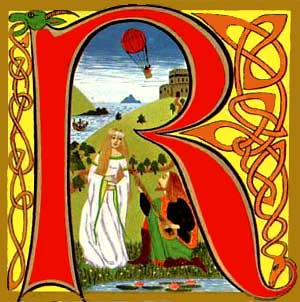
|
En la R se ilustra Lady
of the dancing water (letra).
|
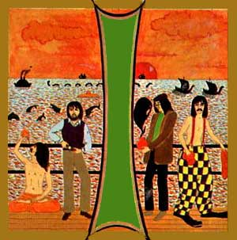 |
En la I de CRIMSON se ven a los Beatles, en relación al tema
Happy
family, que versa sobre la reciente separación de esa banda (anunciaron su
separación el mismo año en que se lanzó "Lizard"). George el
místico, Ringo el payaso, Paul el recto, y John sosteniendo una lámpara de
Aladino de donde sale Yoko. En la letra están referidos con los nombres Silas,
Rufus, Judas y Jonah, respectivamente.
|
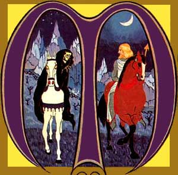 |
En la M...
“La
noche: su cúpula negra salpicada con diamantes, fundió mi polvo de un año
luz, me apretó contra su pecho, me sembró con carbón, tejió mi paño a
través del tiempo. Me concedió para cada cosa un caballo: el amanecer y el
cementerio. Me
dijo que yo solo era de ella. Me ofreció afrontar el este cercándome en preguntas. Construyó el cielo para mi
alba...” (primera estrofa de Cirkus).
Según Sinfield: “La primera parte de la canción habla
de mi nacimiento, pero también del comienzo del universo. Hace falta tejer para
convertir el hilo en paño. Mi nacimiento y mi muerte son
parte del infinito pero tengo preguntas sin resolver. La
primera parte de la canción refleja a un inocente, un primitivo al
que le van a quitar el barro de la jungla”. (Alejandro Díaz Varón, de
su libro King Crimson: crónica de un malestar).
|
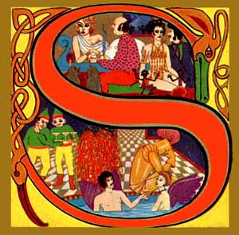
|
En la S se
ilustra el tema Indoor games (Juegos de interior).
"Con un sonido similar al de una peculiar banda de
baile de hotel, el afrutado barítono de Collins da paso a esta visión
curiosamente retorcida del aburrimiento doméstico, los diletantes y los
oportunistas vacíos, todos enfrascados en una ronda de delirios de
autosuficiencia" (*).
|
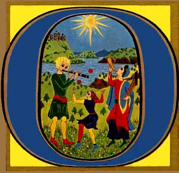
|
En la O se ilustra Dawn song. El amanecer del
día de la batalla.
Letra:
"La noche envuelve su
manto de agujeros alrededor del prado del río.
La vieja luz de la luna
acecha junto a arados rotos,
oculta ruedas sin radios
en la sombra.
Los centinelas se apoyan
en lanzas de espino,
soplan sus manos, miran
al este, ardiendo de sueño y tensos de miedo.
El manto brumoso del
amanecer los cubre.
A tres colinas de
distancia, grandes ejércitos se agitan.
Escupen juramentos y
maldiciones al amanecer.
Formando filas de
caballos y acero, marchan hacia adelante a yardas iguales".
|
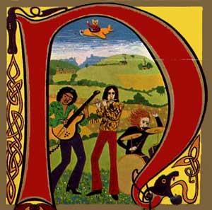 |
En la N de Crimson un oso saluda a bordo de un avión, y
una banda de rock está tocando.
El oso se asemeja a un famoso personaje de historieta llamado Rupert
the Bear (Ruperto el oso) creado en 1920 por la artista inglesa Mary
Tourtel.
"Ahora los osos vagan por el jardín del príncipe
Ruperto" (fragmento de Prince Rupert awakes).
Un artículo periodístico de 2013 en
Internet dice que Gini
Barris quiso pintar una banda de rock de fantasía, con Jimi Hendrix (aunque
estaría en espejo, porque era zurdo) y el baterista Ginger Baker (de la banda Cream). El flautista sería Dave Wade,
músico muy poco conocido pero pareja de Gini.
|
Dice Alejandro Díaz Varón sobre la letra de Lizard:
¿De qué habla y qué sentido tiene la letra entonces?. Según
el propio Sinfield: “El príncipe Ruperto despierta relata cómo la
religión organizada condiciona y estrecha las mentes de la gentes”. La figura
de Ruperto remite al noble inglés del siglo XVII Ruperto (1619-1682). Personaje
que ha animado la imaginación romántica tan propia de Inglaterra y de
Alemania. No podemos obviar el hecho de que en realidad la letra no puede ser
interpretada de manera cerrada como una canción sobre este personaje. El estilo
de Sinfield suele ser multi-referencial y sintético (a menudo fusionando cosas
y personajes bastante distintos en una sola entidad). Aquí, sin duda, hay una
fusión de varios personajes en ese príncipe Ruperto: el Príncipe Ruperto
real, el arquetipo del guerrero y la propia figura de Peter Sinfield tal como se
veía él a sí mismo parcialmente en 1970. Tanto el príncipe Ruperto como él
llevaban sombreros peculiares, tenían el pelo largo y poseían cierto aire
extravagante. En palabras del propio Sinfield: “Había leído acerca de esta
figura que de algún modo se parecía a un príncipe 'hippy', con ese aura
romántica y pensé que tenía algo que ver conmigo y con mi aspecto. Era una
figura romántica que captó mi imaginación”. Sobrino de Carlos I, Ruperto
luchó por la causa realista contra las tropas de Cromwell. Carlos I acabaría
siendo decapitado en Londres en 1649. Además de este lado guerrero, tenía
otras inquietudes, entre las que destacan las científicas y zoológicas. Las
lágrimas de cristal eran un juguete inventado en el siglo XVII y que el
príncipe Ruperto y sus caballeros realistas utilizaban. Eran gotas de cristal
que dentro llevaban una pequeña cantidad de pólvora y que al estrellarlas
contra el suelo explotaban. Al usar este tipo de bromas indignaban a los
puritanos, seguidores de Cromwell. Aquí simbolizados en “los párpados
sabáticos”. (King Crimson: crónica de un malestar).
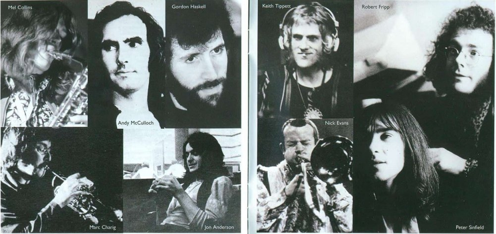
Interior de la cubierta
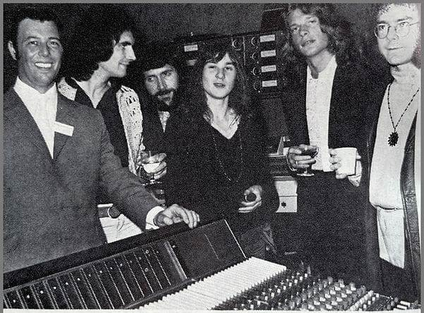 En el estudio
|
 Lizard
Lizard